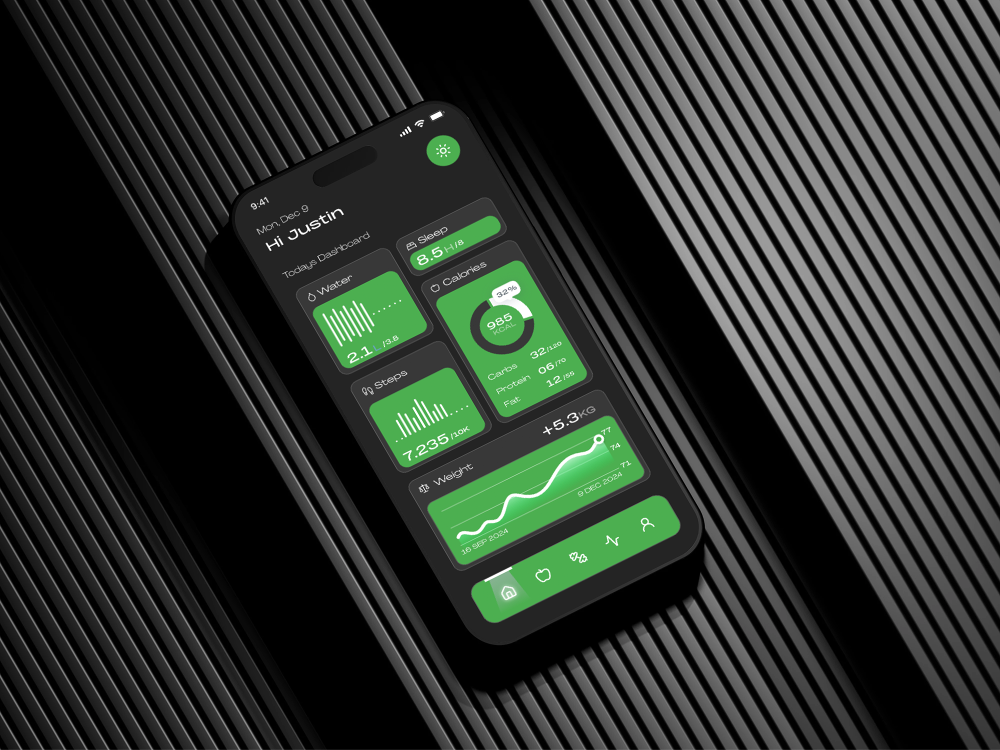
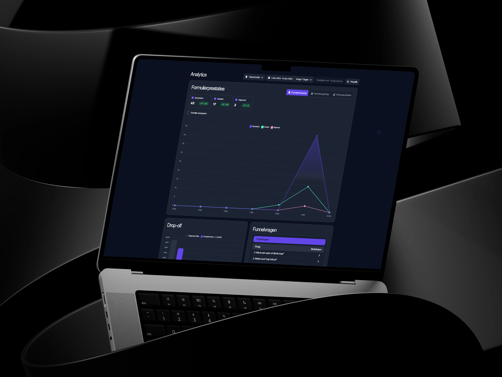
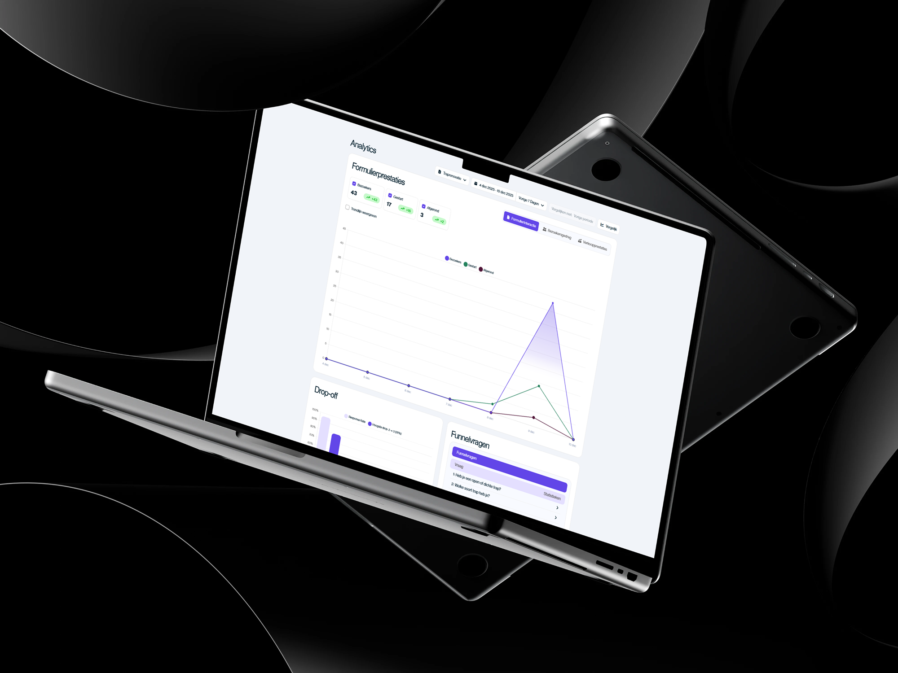
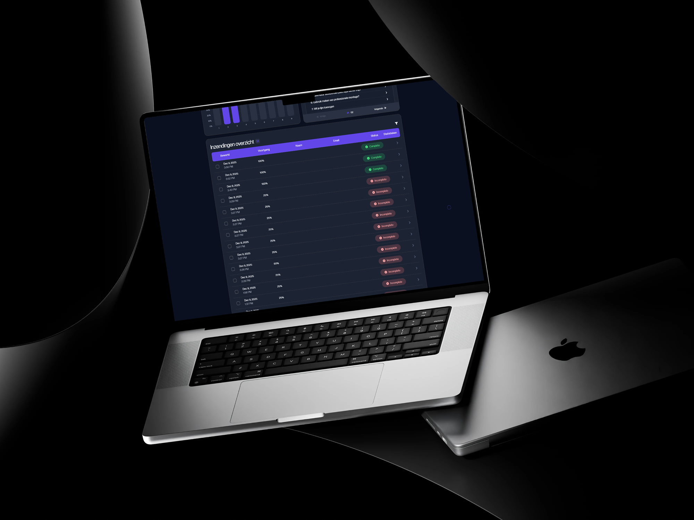
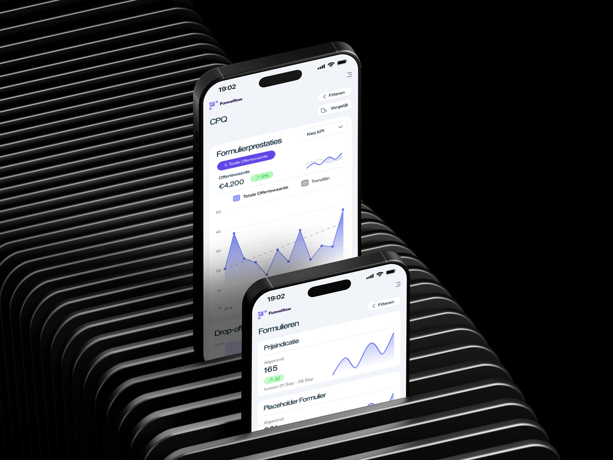

Selected Project
Funnelflow Dashboard
I designed and developed a responsive dashboard interface aimed at generating new leads through configurators. The dashboard receives real-time data from an API and is the central component of a tool that my internship company built. I paid close attention to the UI/UX, with a clear structure and a user-friendly flow.
Funnelflow is a tool that my internship company built to help businesses generate new leads through configurators. The tool needed a dashboard to manage the configurators and the leads generated through them. I redesigned the dashboard to improve the user experience and make it more efficient by adding new features and improving the overall design.



